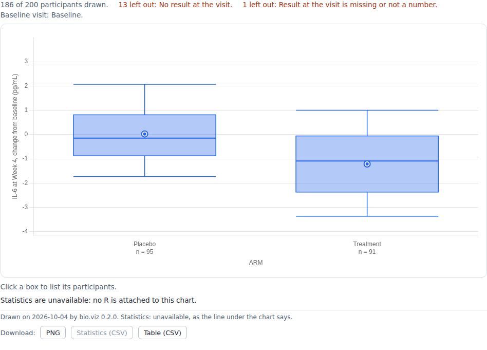
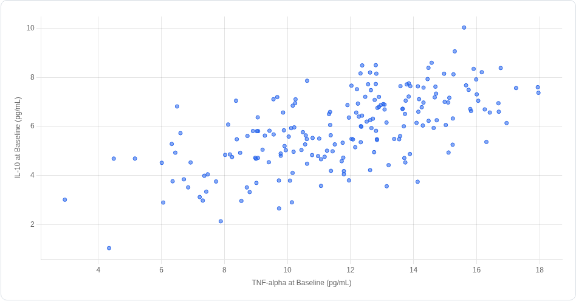

Charts · evidence · reference
Gallery
Each chart in bio.viz, with the tests that prove it does what its requirements say and the reference for calling it.
Charts

Group comparison
Does this biomarker differ between these groups? One value across the levels of a category at chosen visits, as boxes, violins or points with the number in each group beneath, a second grouping by colour, panels by one further variable and a logarithmic scale. It opens on every biomarker at every visit, and a click on a biomarker opens it alone, with R's test of the groups under each visit. Click a box or a point to list its participants and open a participant's profile.

Association scatter
Do these two variables move together? One point per participant, with either axis a biomarker at a visit or a participant-level number, coloured by a group, in panels by one further variable, each axis linear or logarithmic. Under it R's Pearson or Spearman coefficient with its interval and p-value, for everyone drawn and within each colour; over it the line y = x, or R's linear fit or smooth with its band. Drag across the points to list the participants in a region, and click a point to open that participant's profile.

Correlation matrix
Which of these biomarkers, or which visits of one biomarker, are related? A grid over a set of variables: below the diagonal a mark sized and coloured by R's coefficient, above it the number, with the pair count of every cell, for Pearson or Spearman on the participants who have both values. It prints no p-value. It opens on every biomarker at the first visit, and a click on a cell opens that pair in the association scatter, with a way back.

Biomarker screen
Across every biomarker, where is the signal? One row per biomarker for a comparison chosen once, a standardised difference between two groups or a correlation with one variable, with R's estimate and its interval on one axis without units, and R's p-values beside it, unadjusted and adjusted across the rows by Benjamini-Hochberg or Holm. The rows are sorted by the estimate, and a click on a row opens that biomarker in the group comparison or the association scatter, with a way back.
Demo data
Every demo and most tests run on one made-up study, generated in gsm.bio from a seeded model with known effects planted in it, so a test can assert an answer that is known in advance. No real participant is in it.
Results
One row per participant, biomarker and visit: 11,472 rows.
synthetic_results.csv · columns
USUBJID,VISIT,VISITNUM,TEST,STRESU,STRESNParticipants
One row per participant: 200 rows.
synthetic_participants.csv · columns
USUBJID,ARM,SEX,AGE,BMIBL,RESPONSEOutcomes
One row per participant and endpoint: 200 rows.
synthetic_outcomes.csv · columns
USUBJID,PARAMCD,PARAM,AVAL,CNSR
- Copied byte for byte from gsm.bio at commit
20e4a03, licence Apache License (>= 2). Nothing is retyped or regenerated here. - The source record holds each file's checksum, and the unit tests fail when a file no longer matches it.